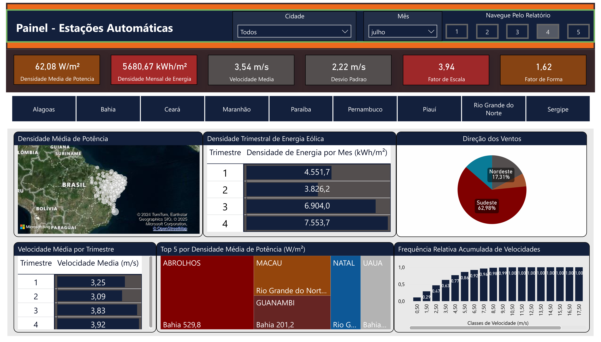
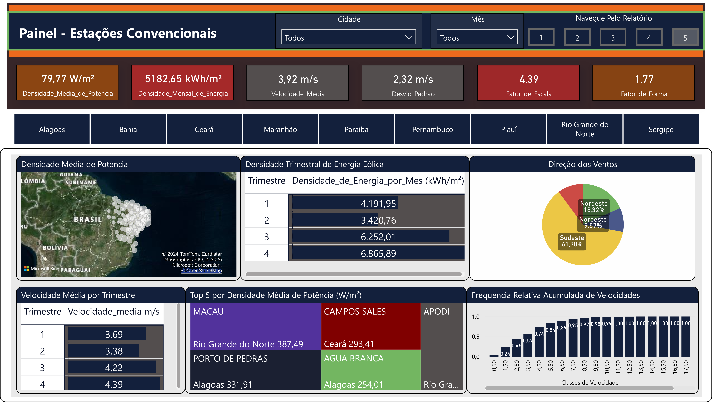
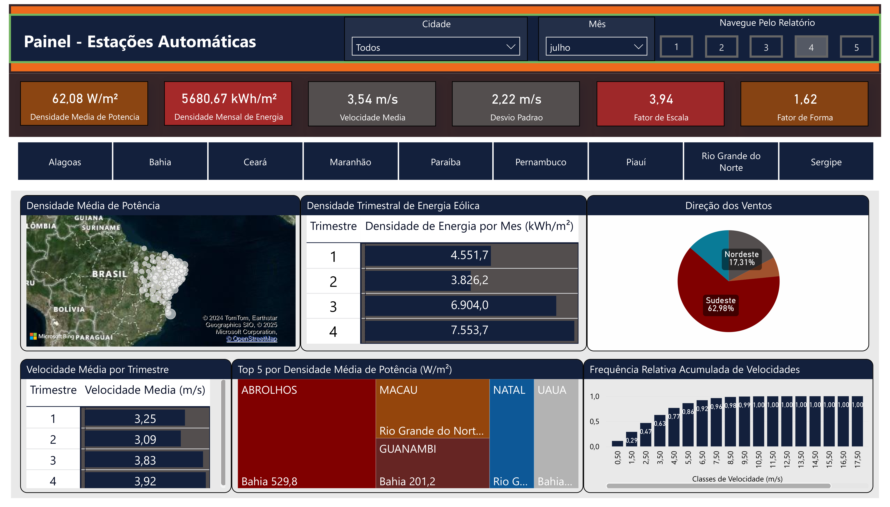
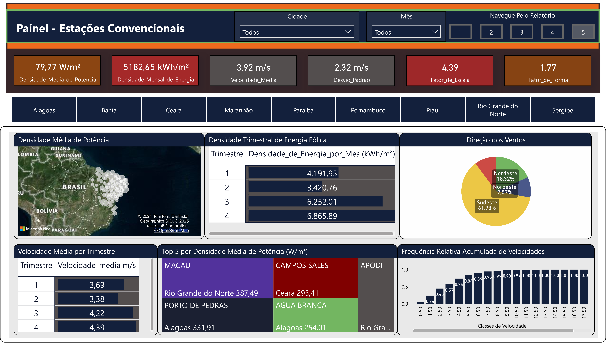

Operação de Usinas Hidrelétricas
Descrição: Este dashboard acompanha as métricas de operação das principais usinas hidrelétricas brasileiras ao longo de 20 anos. Foram utilizados bancos de dados do Operador Nacional do Sistema Elétrico (ONS), da Agência Nacional de Águas e Saneamento (ANA) e da Agência Nacional de Energia Elétrica (ANEEL).


Produção Agrícola e de Biocombustíveis
Descrição: Este dashboard fornece insights sobre a produção de biometano, biodiesel e etanol no Brasil. A produção agrícola dos últimos 20 anos também está contemplada.Os dados trabalhados neste projeto advieram da Agência Nacional de Petróleo, Gás Natural e Biocombustíveis (ANP), bem como do Sistema IBGE de Recuperação Automática (SIDRA).


Dados de Vento
Descrição: Este dashboard analisa o recurso eólico da região Nordeste do Brasil. Foram utilizados dados de mais de 220 estações meteorológicas, dentre automáticas e convencionais. Dados extraídos do Instituto Nacional de Meteorologia (INMET).


 



Dados de Geração Distribuída
Descrição: Este dashboard apresenta indicadores relativos aos empreendimentos de energia solar fotovoltaica no âmbito da Geração Distribuída para todo o Brasil. Foram utilizados dados da Agência Nacional de Energia Elétrica (ANEEL), do Instituto Nacional de Pesquisas Espaciais (INPE) e do Instituto Brasileiro de Geografia e Estatística (IBGE).